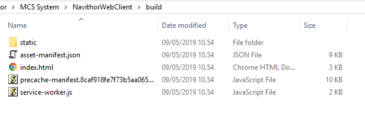
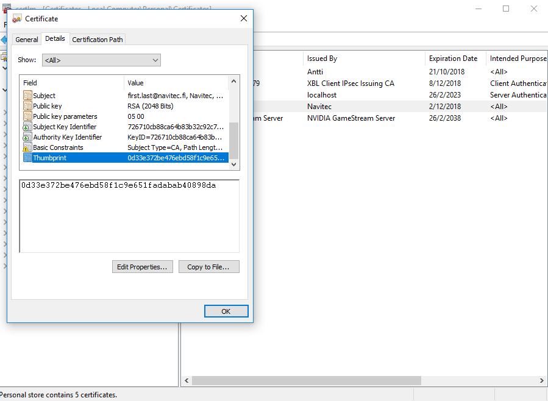
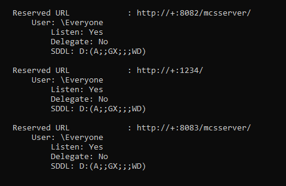
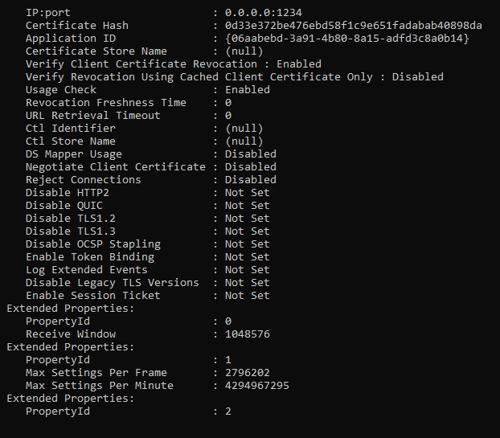
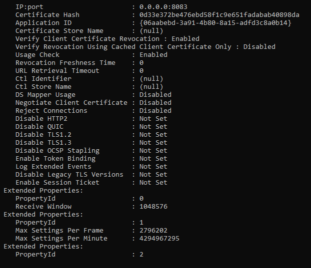
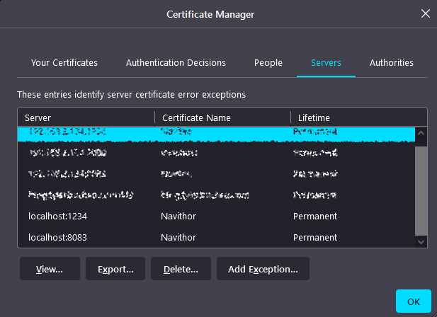

Setting up Web server to enable Web client
This document contains information on how to install and configure Web Server for Navithor Web Client.
Updated 28.07.2022
Version history
| Version | Date | Author | Description |
|---|---|---|---|
| 1.0 | 15.01.2021 | Tommi Kärki | Migrated from another document |
| 1.1 | 15.04.2021 | Tero Laakso | Instructions for easy installation |
| 1.2 | 11.06.2021 | Aleksi Ålander | Renamed title |
| 1.3 | 04.02.2022 | Tero Laakso-Pitkäkoski | Navithor Server.exe configuration moved to ServerSettings.json |
| 1.4 | 28.07.2022 | Elena Sgonova | Updated instructions with troubleshooting hints |
Navithor Web Client installation
Navithor Web Client installation package is delivered as a ZIP file, with content similar to this: 
Extract this package to the Navithor Server folder. Making sure that the index.html file is in same folder as Navithor Server executable.
General configurations
Configure web server ports and encryption in ConfigFiles/ServerSettings.json. Default settings are listed below. If UseWebServer is false the other settings don't affect anything and Web Client can't be reached.
{
"UseWebServer": true,
"UseHttps": false,
"WebClientPort": 1234,
"WebSocketPort": 8083,
"WebClientCertCommonName": "MCSServer"
}
After configurations are saved, start Navithor Server executable. First execution after Web Client configuration changes will run automatic HTTP server configurations. Server will ask for Administrator permissions to do so and it will restart once done. It is advisable to turn off RunAsService configuration while setting up Web Client or changing its settings.
If UseHttps is set to true, both the request-response communication and web socket communication will use SSL (https and wss). Using SSL requires that a valid certificate is configured to the system certificate manager, see next chapter. SSL is highly encouraged since otherwise username and password will go through the network in plaintext.
Steps to configure SSL
SSL certificate generation
Generate a certificate if one does not already exist
A tool for generating self-signed certificate is OpenSSL. A windows version can be downloaded from https://slproweb.com/products/Win32OpenSSL.html
The certificate is generated using the following steps:
- Navigate to openssl.exe folder (Default path: ...\Program Files\OpenSSL\bin)
- From command line run the following command:
openssl req -x509 -newkey rsa:2048 -keyout key.pem -out cert.pem - Fill in needed information for your organization
- From command line run the following command:
openssl pkcs12 -export -in cert.pem -inkey key.pem -out mycert.pfx
Import the certificate with Windows Certificate Manager
- Type "manage computer certificates" to windows search and click the search result to open "certlm"-window
- Right click Personal->All tasks->Import.

- Browse for the created certificate.
- Don't set password and just click next until the final.
Navithor SSL configuration
Set WebClientCertCommonName parameter in Navithor Server config file to match with the Common Name of the certificate you have imported (visible in "certlm"). Run Navithor Server, it will detect the changes in Web Client configuration and ask for elevated permissions to change the configuration.
Manual setup
In environments where running Navithor Server as Administrator when doing the installation is not possible or something else prevents Navithor to automatically change the HTTP bindings to match the configuration, HTTP and SSL cert bindings require manual steps for the Web Client to work.
Steps to configure SSL
After successfully importing the certificate following the steps in section "SSL certificate generation", double click the created certificate from "certlm"-window: Personal/Certificates, select details page and click the thumbprint at the bottom of the list.

Copy the following commands to notepad and insert the certificate's thumbprint from details page to the certhash parameter. Also replace the webClientPort and webSocketPort with the configured ports.
netsh http add sslcert ipport=0.0.0.0:webClientPort
certhash=thumbprint
appid={06aabebd-3a91-4b80-8a15-adfd3c8a0b14}
netsh http add sslcert ipport=0.0.0.0:webSocketPort
certhash=thumbprint
appid={06aabebd-3a91-4b80-8a15-adfd3c8a0b14}
An example:
Run the following commands from command prompt as administrator:
netsh http add sslcert ipport=0.0.0.0:1234 certhash=0d33e372be476ebd58f1c9e651fadabab40898da appid={06aabebd-3a91-4b80-8a15-adfd3c8a0b14}
netsh http add sslcert ipport=0.0.0.0:8083 certhash=0d33e372be476ebd58f1c9e651fadabab40898da appid={06aabebd-3a91-4b80-8a15-adfd3c8a0b14}
Steps to create correct url reservations
To use the web server, make sure that the correct urls are reserved for non-administrator users and accounts. Open command prompt with administrator privileges.
Copy the following commands to notepad and replace ports with the configured ports. Replace also the user parameter with the correct user. Leave the port 8082 and protocol as is since it is an internal communication port between Navithor and web server. Use https if you wish to use SSL encryption with the web server, but only for client and websocket ports. Port 8082 should always have http.
netsh http add urlacl url=https://+:webClientPort/ user=USER
netsh http add urlacl url=https://+:webSocketPort/mcsserver/ user=USER
netsh http add urlacl url=http://+:8082/mcsserver/ user=USER
An example:
netsh http add urlacl url=https://+:1234/ user=Everyone
Note that the user has to be defined in the same language than the operating system. For example, the user in Denmark should be "Alle" instead of Everyone.
Troubleshooting
General notes
Make sure url reservations were correct. Run netsh http show urlacl on command prompt and verify that correct ports and protocols were configured both in netsh and in the ConfigFiles/ServerSettings.json. Below an example without SSL.

{
"UseWebServer": true,
"UseHttps": false,
"WebClientPort": 1234,
"WebSocketPort": 8083,
"WebClientCertCommonName": "MCSServer"
}
If useHttps is set to true, make sure that https is set on the netsh http reservations and check that the correct ports and certificate hash are shown in netsh http show sslcert. Below an example with SSL.


As always make sure that the firewalls do not block connections to the configured web server ports.
Fixing wrong configurations
Fixing wrong configurations can only be done by first deleting the wrong reservation and then adding the configuration again. Deleting http reservation is done with command:
netsh http delete urlacl url=protocol://+:port/
An example:
netsh http delete urlacl url=https://+:1234/
Fixing Error: 183 Cannot create a file when that file already exists
In case the error message "SSL Certificate add failed, Error: 183 Cannot create a file when that file already exists" is shown, run following commands:
netsh http delete sslcert ipport=0.0.0.0:WebClientPort
netsh http delete sslcert ipport=0.0.0.0:WebSocketPort
An example:
netsh http delete sslcert ipport=0.0.0.0:1234
netsh http delete sslcert ipport=0.0.0.0:8083
Fixing websocket not receiving data from server
One sign of websocket not receiving data is when user can successfully log in and Web Client UI is loaded but dynamic data (i.e. AGVs or symbolic points statuses) is not being updated and "Offline mode - No server connection" message is displayed but the server is running. This happens in some browsers when using HTTPS protocol and browser does not trust self signed certificate.
Possible solution to this issue:
-
Import a certificate to Trusted Root Certification Authorities with Windows Certificate Manager
-
Add an exception in the browser security settings. Server URL must contain websocket port as shown in the example:

Running web server
Web server is hosted in the Navithor server application. If all steps in this chapter are successfully done, then starting Navithor server will also start the webserver and the Web Client can be reached. And if not, the server launcher will get stuck at "Initializing connections..." state. In that case - see the previous subchapter: Troubleshooting